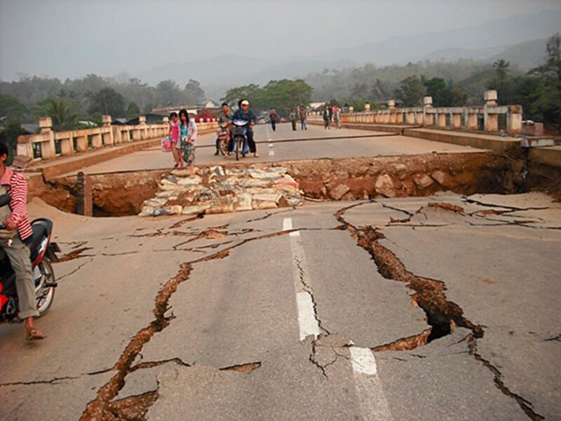
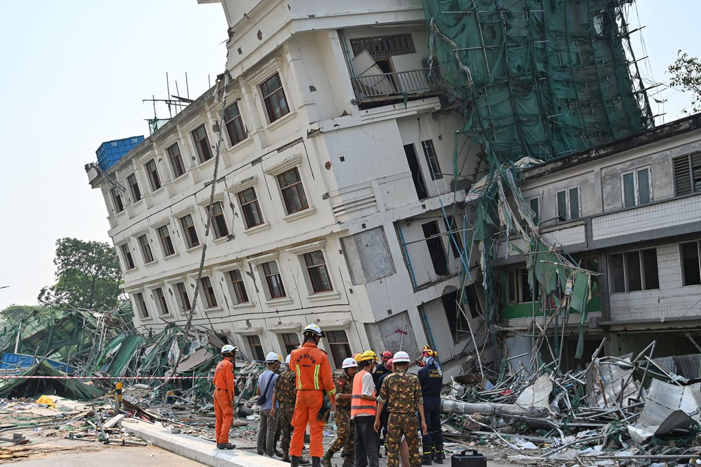
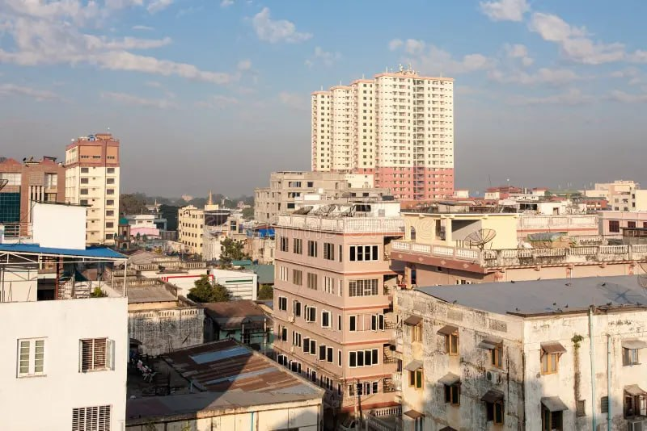
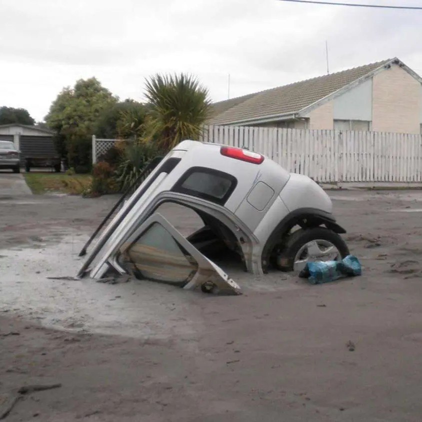
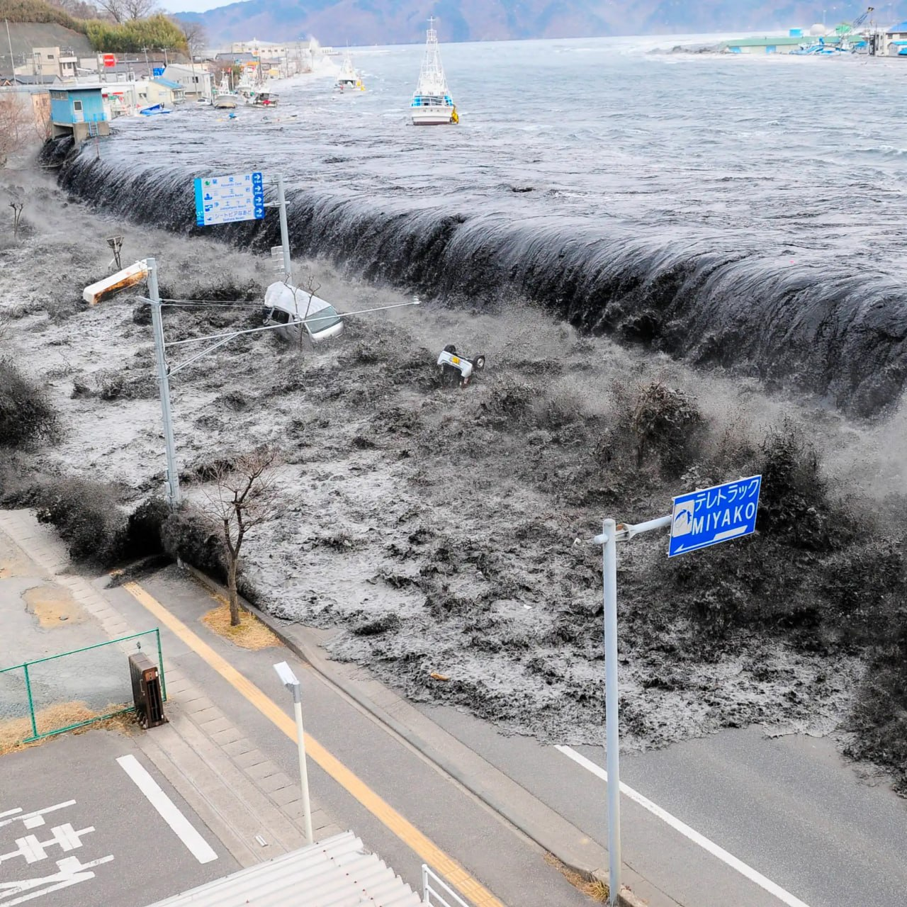
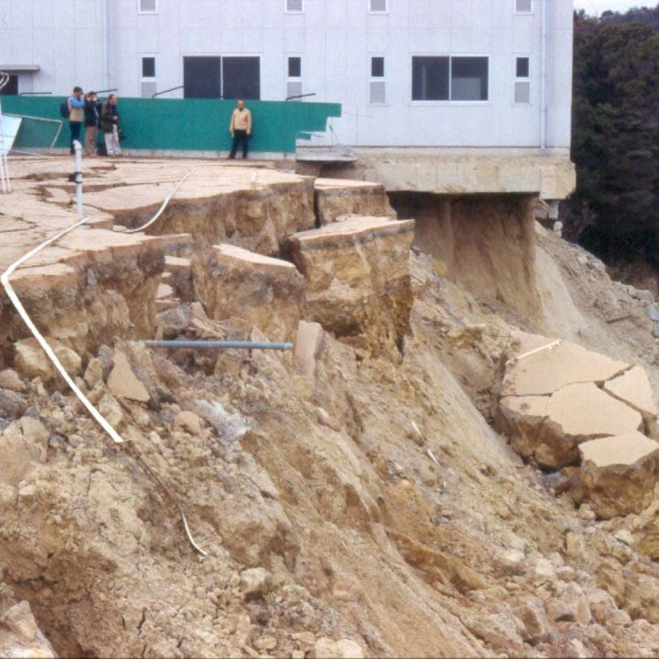

VANGUARD Menu
VANGUARD Menu
Year 9 PBL Project
Earthquake Risk Reduction
Understanding seismic events and ground vibrations
An earthquake is the sudden, rapid shaking of the Earth's surface caused by the sudden release of energy stored in the Earth's crust. This energy builds up over long periods due to the motion of giant tectonic plates moving against each other.
When the stress exceeds the strength of the rocks, a sudden fracture occurs along a fault line, radiating shockwaves outward in all directions through the ground.

Earth's tectonic plates continually shift and interact
Learn how the ground behaves before an earthquake and discover the common effects after it stops.
Compare how being ready keeps people safe

Unprepared Urban Infrastructure

Seismically Retrofitted Architecture
Simple numbers that show earthquake dangers and how being ready saves lives.
Most major earthquakes happen where giant tectonic plates crash into each other.
Most people get hurt during earthquakes because weak buildings crumble and fall.
Only a small number of families have an emergency backpack packed and ready.
Making buildings stronger and teaching safety rules can save almost everyone.
Watch how underground pressure makes the ground shake.
Study about the ground movement and causes
Other dangerous problems that are caused right after the ground stops shaking.

Wet ground acts like quicksand during shaking and causes buildings to sink or tip over.

Earthquakes under the ocean push water up and create giant tsunami waves that flood the coast.

Violent shaking makes rocks and soil slide rapidly down hills and mountains into towns below.
Broken gas pipes and fallen power lines cause dangerous fires while broken water pipes make fighting them hard.
Follow these three main safety actions immediately as soon as you feel the ground start to shake.
Drop down onto your hands and knees immediately to prevent being knocked over by ground motion.
Cover your head and neck under a sturdy table or desk. Crawl away from windows and glass fixtures.
Hold securely onto your shelter and move with it if it shifts until shaking completely stops.
Check off the true earthquake facts you already know to track your awareness level.
Smart ways to upgrade buildings and homes so they stay strong and safe during earthquakes.